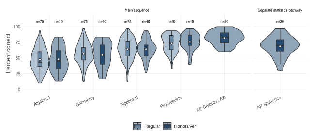

Make learning visible
Define assessment signals and success metrics that distinguish performance, growth, participation, completion, and data quality.
Mathematics and learning-systems leader
I build assessment systems, education data workflows, and AI-assisted instructional tools. My work connects mathematics leadership with practical evidence for teaching and learning.
Assessment and measurement, learning analytics, LMS/API automation, and human-reviewed AI.
Featured work / Logos Education Group
Explore a common mathematics assessment, its interactive department dashboard, and the report that connects findings to teaching priorities. All three use the same 30-question form; the report and dashboard share a fictional 500-student scenario.

Problems I Solve
I design the connective systems that help people understand what students know, choose the next instructional move, and make organizational decisions from trustworthy evidence.
Define assessment signals and success metrics that distinguish performance, growth, participation, completion, and data quality.
Turn diagnostic and rubric evidence into reviewable feedback, remediation, and follow-up workflows without removing educator judgment.
Translate LMS-shaped records into validated data models, analytics products, and explanations that different teams can use.
Selected projects
Working artifacts, the questions they answer, and the methods behind them.
Working Evidence
The Logos report as an interactive dashboard: courses, classes, questions, comparisons, and teaching priorities.
Supporting analytic workspace Education Data LabStructured chat surface for tables, summaries, charts, and cited analysis over a public-safe warehouse.
Supporting reviewer workflow Instructional AI Reviewer DemoInspect synthetic rubric evidence, draft feedback, review-required cases, approved language, and remediation planning.
Evidence & Method
Portfolio summaries describe the problem and decision. Project pages show the system, validation, artifacts, and limitations. Repositories retain code, setup, tests, data contracts, model cards, and detailed architecture.
Review the evidence methodOpportunities
Through Logos Education Group, I bring assessment and reporting into a practical mathematics program review. This portfolio shows the analytical and technical work behind that practice.
I’m focused on learning engineering, AI learning systems, learning analytics, assessment and measurement systems, education data, and technical EdTech implementation. I also consider selective remote, part-time data and domain-expert AI evaluation work.